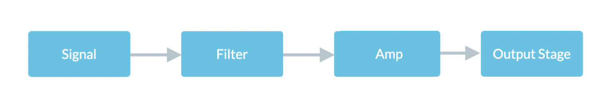

From March to June (of 2022) I designed and constructed a functional audio amplifier! I studied signal processing, acoustics, and electrical engineering to carefully draft three individual stages (filter, gain stage, output stage) and combine them to create a 5.5x gain amplifier!
Amplifying "Weird Fishes/ Arpeggi" by Radiohead (one of my favorite songs of all time).
Amplifying raw voltage input from a signal generator (e.g. individual pitches).
This audio amplifier implements three stages: a band pass filter, a gain stage (amplifier), and an output stage.
Circuit diagram illustrating the low-pass filter (left) and high-pass filter (right).
The band pass filter is comprised of two consecutive RC circuits. One acts as a low-pass filter and the other acts as a high-pass filter. Essentially, they only allow low/high frequencies (respectively) to pass through; the corner frequency values are determined by:
\[\large f_{c} = \frac{1}{2\pi(RC)}.\]The impedence of a capacitor in an AC circuit is as follows
\[\large Z = \frac{1}{i(2 \pi f) C}.\]With a given AC signal input at a given frequency we can determine the behavior of the output signal; furthermore, we can see how the arrangement of the two RC circuits differentiates the low-pass from the high-pass filter.
\[\large \lim_{f\to\infty} (Z)=0, \quad \lim_{f\to0} (Z)=V.\]Additionally, the presence of a capacitor in between the signal input and the gain stage adds another function: DC blocking! The capacitor allows AC signals (i.e. signals with non-zero frequencies) to pass through while blocking DC (zero frequency) signals from interfering.
Circuit diagram illustrating the output stage.
The gain stage uses four resistors and an NPN transistor to produce a predicted 6x gain. I designed the circuit to implement voltage divider bias as it removes dependence on beta (highly variable due to a myriad of factors). Using resistors, we create bias voltages and generally fix the voltage difference across $\text{R}3$.
With this design, the input signal (initially passed through the band-pass filter) is amplified to ~6x. The voltage swing is translate to be centered at 6V with a +/- 5V peak.
In characterizing the quality of this amplifier, I ran a fast-fourier transform and studied the harmonics to calculate the Total Harmonic Distortion (THD). Using the following equation, I found the THD which represents how much harmonic noise distorts the output signal; I aimed for a relatively low number.
\[\large \text{THD} = \frac{\sqrt{\sum_{n=2}^{\infty} V_{n(rms)}^2}}{V_{fund(rms)}}.\]The calculated THD for this amplifier is $2.359\%$!
Circuit diagram illustrating the output stage.
The gain stage properly amplifies the input signal; however, it lacks the current to drive the speaker. To solve this problem, I created an output stage which used a current mirror to maintain a 1x gain while boosting the current into the speaker. The current mirror essentially fixes the voltage drop across Q6 which in turn fixes the current passing through the collector/output.
On its own, the two output transistors still did not have enough current to drive the speaker properly. So, I added another "layer" of two transistors to minimize the base current requirement, resulting in an improved output. Additionally, I needed to use heatsinks (both commercial and some DIY aluminum ones!) because the capacitors would heat up quickly. This caused thermal runaway which impacted the circuit--I countered this by monitoring the current via a DC signal generator and using the heatsinks to keep temperatures relatively low.
Showcasing the final circuit, including the filter, gain stage, and output stage.